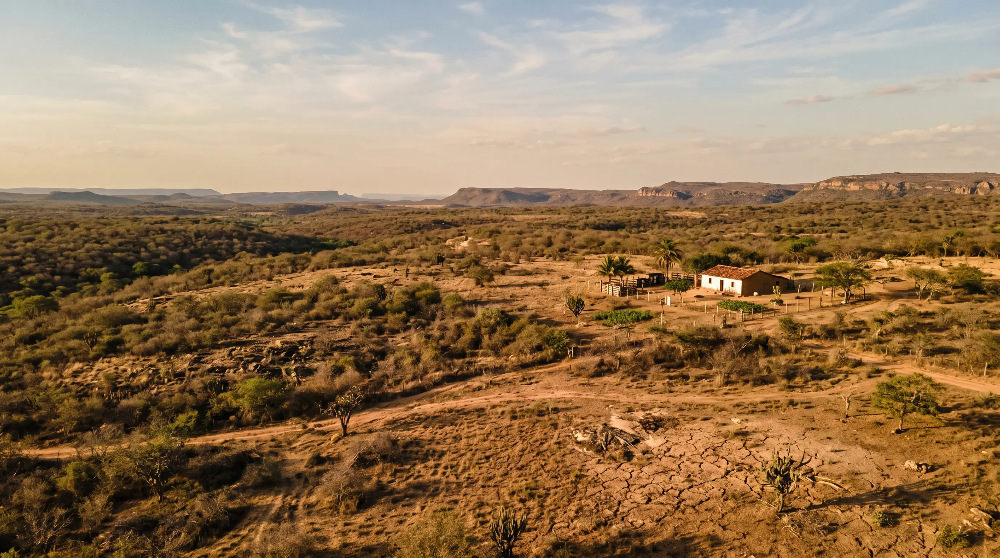
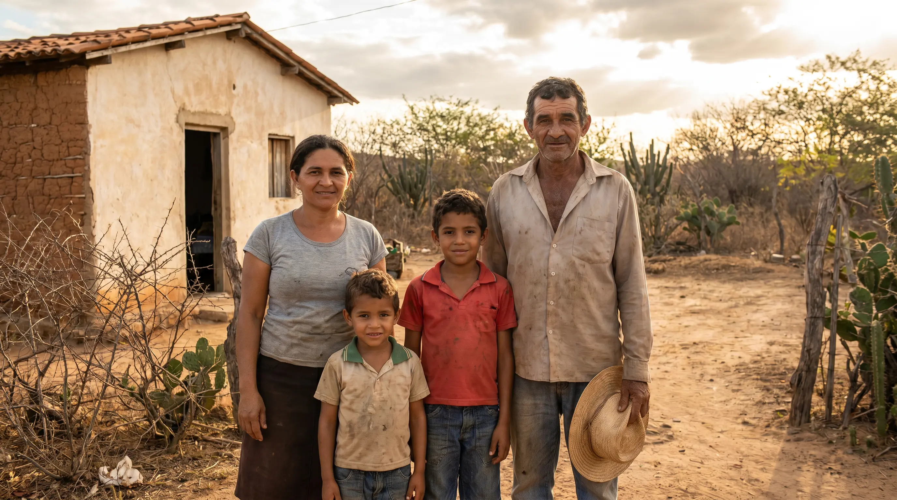
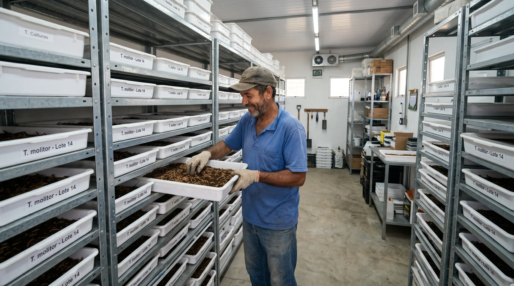
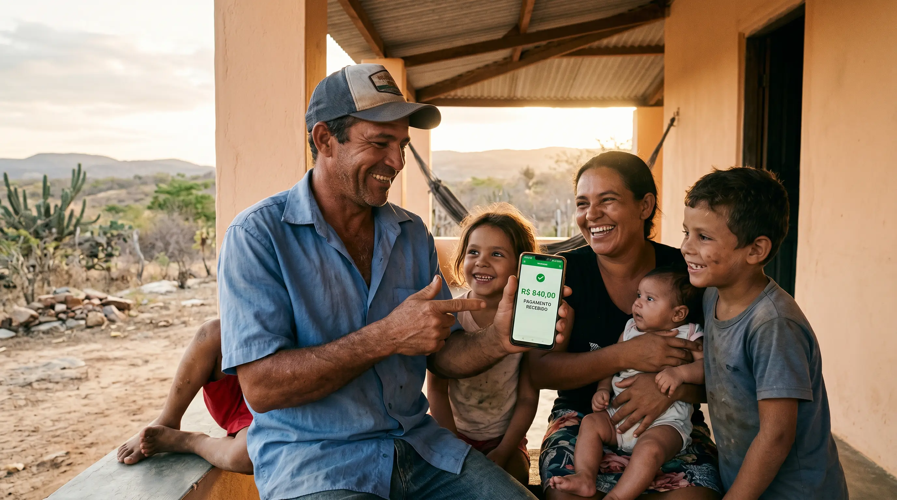
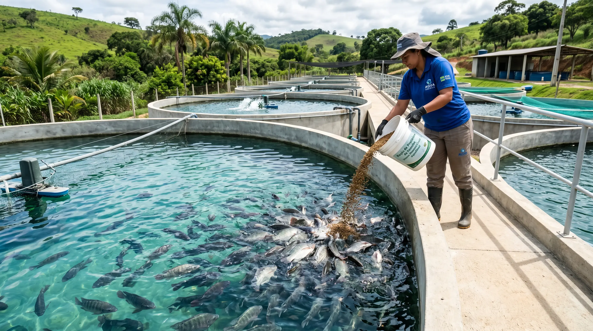
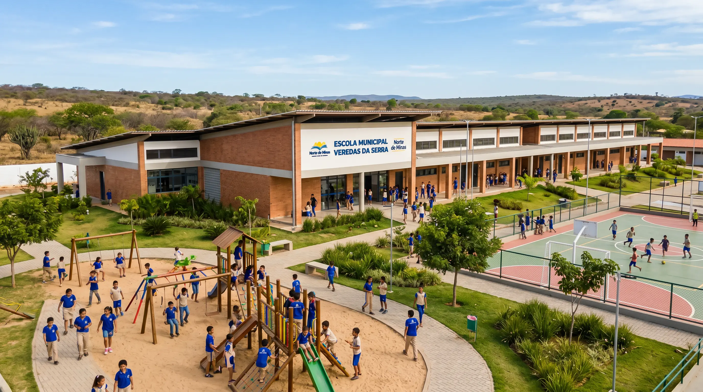

Uma nova cadeia produtiva para Verdelândia — renda real para 40 famílias, tecnologia aprovada e financiamento disponível agora.

No Norte de Minas, agricultores familiares trabalham a vida inteira com o que a terra e a chuva permitem. Quando a seca chega — e ela sempre chega — não sobra saída. Os jovens vão embora. As famílias ficam.

Criação de Tenebrio molitor — aprovado pelo MAPA para pet food, aquicultura e ração animal. A BIOFARM tem tecnologia exclusiva com ciclo muito mais rápido que o padrão mundial. A família produz; a BIOFARM compra tudo.


| Atividade | CAPEX | Área | Renda líq./mês | ROI anual | Payback | Tenébrio BIOFARM ✓ |
|---|---|---|---|---|---|---|
| Gado de leite (10 vacas) | R$150–300k | 10–20 ha | R$800–1.500 | 5–8% | 10–15 anos | — |
| Frango de corte | R$80–150k | 500–2.000 m² | R$600–1.200 | 8–12% | 6–10 anos | — |
| Ovos (1.000 galinhas) | R$100–180k | 3.000–10.000 m² | R$800–1.200 | 6–10% | 8–12 anos | — |
| Banana (2 ha) | R$30–60k | 20.000 m² | R$400–800 | 8–15% | 3–5 anos | — |
| Soja (10 ha) | R$50–100k | 100.000 m² | R$300–700 | 8–12% | 5–8 anos | — |
| Tenébrio BIOFARM | R$95k | 70 m² ! | R$2.265 | 28,4% | 3,5 anos | ✓ Em tudo |
O Tenebrio molitor tem aprovação formal do MAPA para os maiores mercados do Brasil. O negócio começa com regulamentação garantida — não espera por ela.

As famílias produzem a matéria-prima. A BIOFARM transforma e distribui. Cada mercado vira uma empresa independente — com marca, produto e estratégia próprios. Toda a cadeia ancorada em Minas Gerais.
40 famílias. Tecnologia aprovada. Financiamento mapeado. Regulamentação vigente. Parceiros prontos. O projeto está completo — esperamos o apoio para protocolar.
